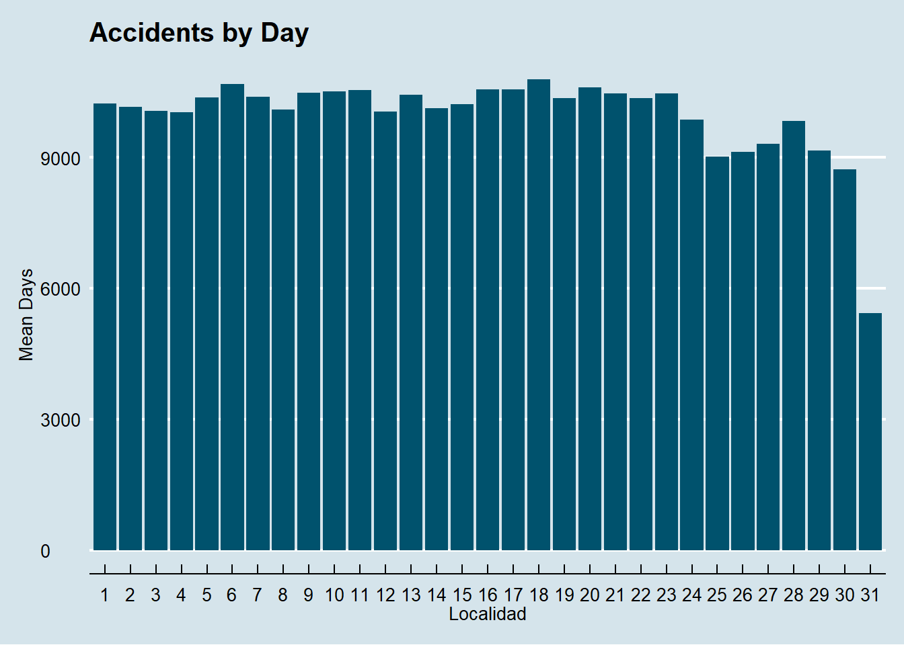
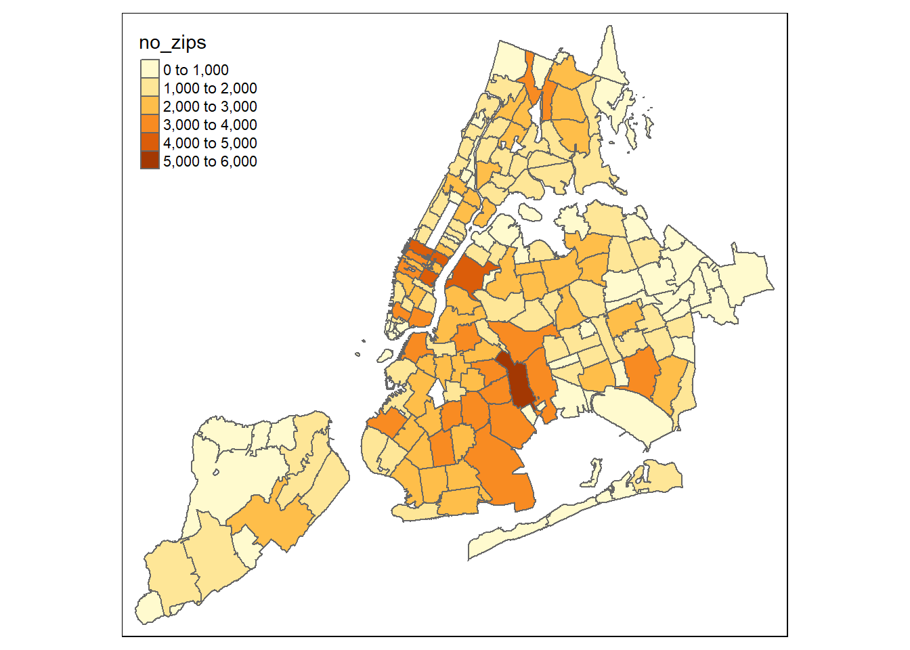

This is an R Markdown document. Markdown is a simple formatting syntax for authoring HTML, PDF, and MS Word documents. For more details on using R Markdown
his is an R Markdown document. Markdown i
library(sf)## Warning: package 'sf' was built under R version 3.6.2## Linking to GEOS 3.6.1, GDAL 2.2.3, PROJ 4.9.3library(tmap)## Warning: package 'tmap' was built under R version 3.6.2library(leaflet)## Warning: package 'leaflet' was built under R version 3.6.2library(ggmap)## Warning: package 'ggmap' was built under R version 3.6.2## Loading required package: ggplot2## Warning: package 'ggplot2' was built under R version 3.6.2## Google's Terms of Service: https://cloud.google.com/maps-platform/terms/.## Please cite ggmap if you use it! See citation("ggmap") for details.library(dplyr)## Warning: package 'dplyr' was built under R version 3.6.2##
## Attaching package: 'dplyr'## The following objects are masked from 'package:stats':
##
## filter, lag## The following objects are masked from 'package:base':
##
## intersect, setdiff, setequal, unionlibrary(stringr)## Warning: package 'stringr' was built under R version 3.6.2library(lubridate)## Warning: package 'lubridate' was built under R version 3.6.2##
## Attaching package: 'lubridate'## The following object is masked from 'package:base':
##
## datelibrary(zoo)## Warning: package 'zoo' was built under R version 3.6.2##
## Attaching package: 'zoo'## The following objects are masked from 'package:base':
##
## as.Date, as.Date.numericlibrary(DT)## Warning: package 'DT' was built under R version 3.6.3library(data.table)## Warning: package 'data.table' was built under R version 3.6.3##
## Attaching package: 'data.table'## The following objects are masked from 'package:lubridate':
##
## hour, isoweek, mday, minute, month, quarter, second, wday, week,
## yday, year## The following objects are masked from 'package:dplyr':
##
## between, first, lastlibrary(ggplot2)
library(ggthemes)## Warning: package 'ggthemes' was built under R version 3.6.3data=read.csv('C:/Users/dsaav/Documents/Projects/R/Datasets/database.csv',header=TRUE,stringsAsFactors = FALSE)
sum(is.na(data$ZIP.CODE))
data<-na.omit(data)
# for visualization
data1<-data[,-1]
# For Integration
data2<-data[,c(5,13:19)]
# Summarize Data
zips_counts<-data2%>%
group_by(ZIP.CODE)%>%
summarise(no_zips=length(ZIP.CODE))%>%
arrange(desc(no_zips))
data2<-setDT(data2)[,lapply(.SD,sum),by=ZIP.CODE,.SDcols=c("PERSONS.KILLED","PEDESTRIANS.INJURED",
"PEDESTRIANS.KILLED","CYCLISTS.INJURED", "CYCLISTS.KILLED","MOTORISTS.INJURED", "MOTORISTS.KILLED")]
data2<-merge(zips_counts,data2,by='ZIP.CODE')data1$DATE<-parse_date_time(data1$DATE, orders=c("ymd", "dmy", "mdy"))
data1$Day<- factor(day(data1$DATE))
data1$Month<-factor(month(data1$DATE))
data1$DayWeek<-factor(wday(data1$DATE))
data1$Year<-factor(year(data1$DATE))
# Visualize days
day_data <- data1 %>%
group_by(Day) %>%
summarize(Total = n())
ggplot(day_data,aes(Day,Total))+geom_bar(stat = 'identity',fill="#00526D")+
labs(title="Accidents by Day") +
labs(x="Localidad")+labs(y="Mean Days")+theme_economist() +
scale_colour_economist()
month_data <- data1 %>%
group_by(Month) %>%
summarize(Total = n())
dayofweek_data <- data1 %>%
group_by(DayWeek) %>%
summarize(Total = n())
year_data <- data1 %>%
group_by(Year) %>%
summarize(Total = n())
month_year_group<-data1 %>%
group_by(Year, Month) %>%
summarize(Total = n())zipsManha<-st_read('C:/Users/dsaav/Documents/Projects/R/Datasets/acs2018_5yr_B01003_86000US10543/acs2018_5yr_B01003_86000US10543.shp')
zipsManha<-zipsManha[-1,c(1,2,5)]
library(varhandle)## Warning: package 'varhandle' was built under R version 3.6.2zipsManha$name<-unfactor(zipsManha$name)
zipsManha$name<-as.integer(zipsManha$name)
#data_sf<-st_as_sf(data, coords=c('LONGITUDE','LATITUDE'),crs=4326,remove =FALSE )
common_zip<-union(data2$ZIP.CODE,zipsManha$name)
length(common_zip)==length(data2$ZIP.CODE)
library(tmaptools)## Warning: package 'tmaptools' was built under R version 3.6.2data_Integration<-merge(zipsManha,data2, by.x ='name',by.y='ZIP.CODE')library(tmap)
library(ggmap)
qtm(data_Integration,fill = 'no_zips')
#ttm()
#tmap_last()